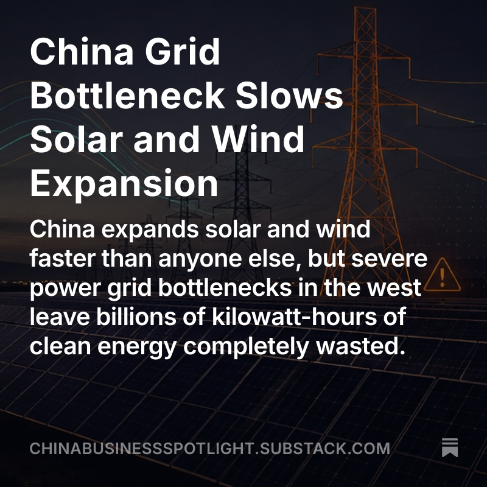
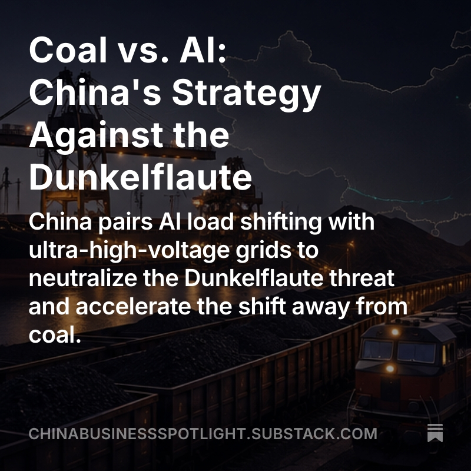
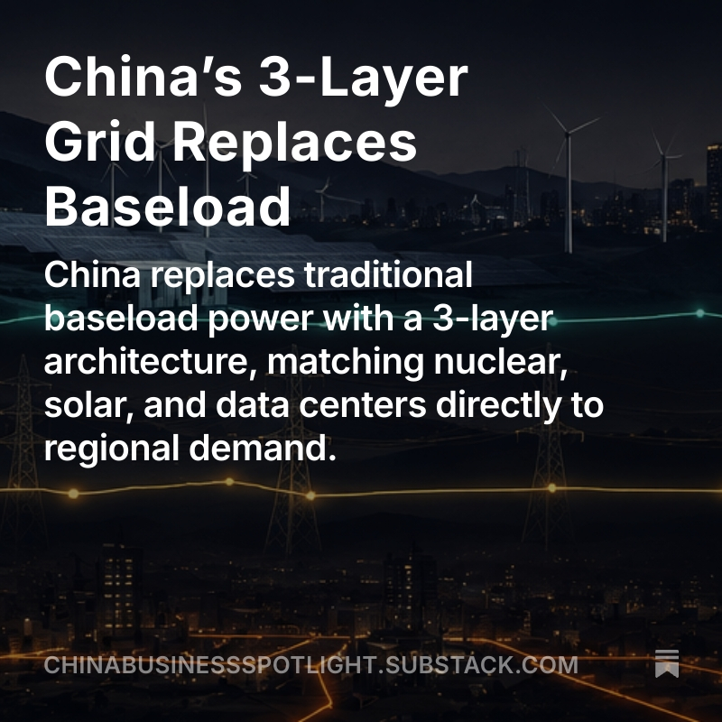

This Month At A Glance
Monthly Summary
Loading…
Loading…
From China Business Spotlight




Fossil Supply
Sources: NBS, GACC · Conversion factors: see Methodology
Source: GACC
Power Generation Mix 2016 – present
Source: Ember
Electricity Demand vs. Generation 2016 – present
Source: Ember
Capacity Added
Loading…
Loading…
Capacity Mix — Renewable · Nuclear · Fossil
Capacity Mix — Clean vs. Fossil
Installed Capacity Growth 2016 – present
Source: Ember
Battery Storage Capacity 2021 – present
Source: NEA
Source: NEA
Source: NEA
Total Energy System
This section shows China's total energy supply, combining domestic fossil fuel production with imports of coal, crude oil, and natural gas, plus clean power generation from wind, solar, hydro, and nuclear. All values are converted to energy equivalent in terawatt-hours (TWh). The second chart tracks China's fossil fuel supply only, merging imports and domestic output. For more details, refer to the Methodology section.
Sources: NBS, GACC, Ember
Sources: NBS, GACC, Ember
Year-to-date Supply
Sources: NBS, GACC
Sources: NBS (production), GACC (imports)
Power Generation — Source Breakdown
China's 15th Five-Year Plan targets more than 70 percent non-fossil electricity generation by 2035, with nuclear capacity reaching 110 gigawatts by 2030. On paper, the buildout is well ahead of schedule: installed wind and solar capacity reached 2,178 gigawatts by May 2026, nearly double the original 1,200 gigawatt target for 2030. The charts below track China's monthly power generation by source: coal, gas, nuclear, hydro, wind, solar, and bioenergy.
Source: Ember
Source: Ember
Source: Ember
Coal Fleet — Capacity and Utilisation
Source: Global Coal Plant Tracker, Global Energy Monitor
Sources: Ember (generation), Global Coal Plant Tracker, Global Energy Monitor (installed capacity)
Fossil Fuel Imports
Source: UN ComTrade
Sources: UN ComTrade, GACC
Crude Oil Imports by Country
LNG Imports by Country
Coal Imports by Country
China's pipeline gas comes from two directions: Turkmenistan and Central Asia, and Russia via Power of Siberia 1, which began deliveries in December 2019. The flat trajectory visible after 2021 reflects a structural constraint, not falling demand. The extension of the Central Asia-China pipeline has been stalled in the Tajik transit section since construction began. Power of Siberia 1, meanwhile, has been ramping toward its contracted ceiling of roughly 38 BCM per year. The gap between the two pipelines is also partly filled by China's own rapidly growing domestic gas production.
Pipeline Gas Imports by Country
Import Price Benchmarks
Source: GACC
EV Transition
Source: CPCA via @leRaffl
Source: CPCA via @leRaffl · Methodology
Oil Displacement & Energy Balance
About
China Energy Monitor is a free, independent project. If it saves you time or informs your work, please consider supporting it with a small donation.
China is the world's largest energy consumer, the largest importer of coal, oil, and gas, and the fastest-growing producer of clean power capacity. Yet structured, reliable data on its energy system is hard to find, harder to compare, and hardest to track over time.
China Energy Monitor changes that. It aggregates primary-source data on China's power generation, fossil fuel imports, domestic production, and grid capacity, updated monthly, sourced transparently, and free to use.
What sets it apart
Most energy trackers look at imports or production in isolation. This dashboard combines them. The Total Energy System view aggregates domestically produced fossil fuels with imports and converts everything to terawatt-hours, so coal, oil, gas, nuclear, and renewables sit on the same scale and can be compared directly across fuels and time.
Data sources
The dashboard combines data from the Chinese National Bureau of Statistics (NBS), the Chinese Customs (GACC), the UN ComTrade database, the Centre for Research on Energy and Clean Air (CREA), and Ember.
Get the raw data
Want a data export or interested in research collaboration? Send a request. A voluntary contribution is appreciated.
Feedback and corrections
Spotted an error? Have a suggestion for a new chart or data source? Get in touch.
Data is provided in good faith. No liability is accepted for errors or omissions. © Doi Ennoson
About the Analyst
Dói Ennoson has nearly two decades of practical experience in China and the wider Asian business environment. His professional work has taken him regularly to China's major industrial centres, including Shenzhen and Wenzhou, as well as to manufacturing clusters and less internationally visible regions. Since 2013, he has been active as an entrepreneur in manufacturing and supply chain management.
He studied Political Science and Scandinavian Studies in Kiel, Greifswald and Reykjavík, with a focus on international relations and political systems. His work combines practical experience from industry, trade and logistics with statistical analysis of economic and energy data.
Ennoson is the author of China Business Spotlight, where he analyses China's economy, trade, energy markets and geopolitical position. His work focuses on the relationship between official statistics, economic structures and observable developments.
Approach
China Energy Monitor is based on publicly available data from Chinese and international sources. Ennoson independently collects, processes and analyses these datasets, with particular attention to definitions, methodological changes, inconsistencies and the limitations of official statistics.
The aim is not to reproduce individual figures, but to make structural developments in China's energy system measurable and comparable over time. Where the available data require estimates, conversions or modelling assumptions, these are documented in the methodology.
Methodology
Data sources and update cadence
| Source | Data |
|---|---|
| NBS (National Bureau of Statistics, China) | Domestic fossil fuel production: coal, crude oil, natural gas |
| GACC (General Administration of Customs, China) | Fossil fuel imports: volume, value, and implied unit price |
| UN ComTrade | Import flows by country of origin, 2020–2024 |
| Ember | Power generation by source, grid carbon intensity, installed wind and solar capacity |
| CREA (Centre for Research on Energy and Clean Air) | Monthly capacity additions by source (thermal, nuclear, hydro, wind, solar) |
| CPCA (China Passenger Car Association) via @leRaffl | Monthly passenger car retail and wholesale sales by drivetrain: BEV, PHEV, EREV, ICE |
| Computed — Weibull fleet model | Monthly crude oil displacement (mb/d) and primary energy balance (TWh) from China's EV fleet; auto-rebuilt after each CPCA update |
| NEA (National Energy Administration, China) | Annual cumulative new-type battery storage capacity (GW, GWh) and duration ratio; updated once per year from the NEA year-end press conference |
All source files are available upon request. A donation is appreciated.
Total Energy System view
The Total Energy System section combines domestically produced fossil fuels and fossil fuel imports into a single supply figure, then converts everything to terawatt-hours so fossil and clean energy can be placed on the same scale.
Fossil fuels are converted from physical units to primary energy equivalent using standard IEA and BP Statistical Review factors:
| Fuel | Factor | Basis |
|---|---|---|
| Coal | 8.14 TWh / Mt | 29.3 GJ/t (hard coal equivalent, tce) |
| Crude oil | 11.63 TWh / Mt | 41.87 GJ/t (oil equivalent, toe) |
| Natural gas | 10.55 TWh / BCM | 38 GJ / 1,000 m³ (gross calorific value) |
Clean power generation (nuclear, hydro, wind, solar, bioenergy) is taken directly from Ember in TWh. Coal and gas power generation from Ember are not added to the fossil supply figures to avoid double-counting.
Note on primary vs. final energy: Fossil fuel volumes represent primary energy content before conversion losses. Clean power generation is final energy (electricity actually produced). Adding both yields a proxy for total energy entering China's system. The two are not physically equivalent, but the combined figure gives a useful order-of-magnitude view of the scale of energy flowing into the Chinese economy.
Gas unit conversion (GACC to BCM)
GACC reports all gas imports (LNG and pipeline gas combined) in metric tonnes. To convert to cubic metres for comparability with NBS production data, a factor of 1 Mt = 1.36 BCM is applied. This factor is standard for LNG and is drawn from the BP Statistical Review of World Energy (Annex: Conversion Factors). Pipeline gas has a slightly different energy density depending on composition, but since LNG accounts for the majority of Chinese gas imports and GACC does not separate the two in mass units, a single factor is applied across both.
Import price benchmarks (Value per Unit)
GACC publishes the total import value (USD) and total import volume (tonnes) for each fuel each month. Dividing value by volume yields an implied average unit price, sometimes called Value per Unit (VpU). The prices underlying this figure come from customs declarations: the invoices submitted to Chinese customs at the point of import. The VpU is therefore best understood as the declared customs price, averaged across all deliveries in a given month.
The benchmark prices shown alongside (Brent, Dubai, Australian coal, LNG Japan) are index prices: they represent spot market quotes, not the prices at which physical cargoes change hands. Most Chinese fuel imports are settled under long-term contracts, often oil-indexed or politically negotiated. The comparison between VpU and benchmarks is therefore only indicative. It shows whether Chinese import prices move broadly in line with world market levels, but it cannot establish whether China paid a premium or a discount on any specific purchase.
To compare GACC VpU against market benchmarks, unit conversions are required:
| Fuel | GACC unit | Benchmark unit | Conversion |
|---|---|---|---|
| Coal | USD / t | USD / t | Direct |
| Crude oil | USD / t | USD / bbl | ÷ 7.33 (IEA standard) |
| Natural gas | USD / t | USD / MMBtu | ÷ 52 (LNG rule of thumb; GIIGNL range: 43–49 MMBtu/t) |
Benchmark prices come from the World Bank Pink Sheet: Brent crude, Dubai crude, Australian coal (Newcastle), and LNG Japan (a proxy for the Japan-Korea Marker).
Iran note: Iranian crude oil does not appear in GACC data. It is reported under third-country names (Malaysia, UAE, Oman). This is a structural data gap that cannot be corrected from public sources.
Country-of-origin data: ComTrade vs. GACC
UN ComTrade provides granular import flows by country of origin from 2020 to 2024 but publishes with an 18–20 month lag. GACC publishes similar country-level data with roughly a six-week lag but does not include volume data (tonnes) in its public downloads. The dashboard merges both sources: ComTrade data takes priority where available; GACC fills the gap from January 2025 onwards. Value charts run continuously; volume charts cover the ComTrade period only (2020–2024).
January and February reporting (NBS / GACC)
NBS and GACC never publish January data in isolation. The two months are always combined and released together as a January–February figure. From 2026 onwards, the dashboard separates January and February for GACC import data by subtracting the standalone February value from the combined total. Year-on-year fields for both months are left empty because comparable monthly breakdowns for 2025 are not available.
Capacity additions (CREA)
CREA publishes capacity addition data with a two-month delay. The figures shown for a given month therefore reflect what was actually built two months earlier. Where the chart label reads "January to June 2026," the underlying data runs from November 2025 to April 2026.
Battery storage capacity (NEA)
The battery storage charts show cumulative installed new-type storage (新型储能) in China, as reported annually by the National Energy Administration (NEA). New-type storage excludes pumped hydro and is dominated by lithium-ion batteries (above 96 percent of installed capacity). The data series begins in 2021 and is updated once per year, typically from the NEA year-end press conference held in January. The H1 2026 data point is sourced from the CNESA (China Energy Storage Alliance) semi-annual industry report. Year-on-year growth percentages are calculated from the cumulative installed base. The 2021 and 2023 year-end figures are derived by combining confirmed CNESA annual addition data with the adjacent confirmed year-end totals.
The duration ratio (hours) is calculated by dividing cumulative installed energy capacity (GWh) by cumulative installed power capacity (GW). A rising ratio indicates that newly added storage projects are being designed for longer discharge cycles, reflecting a shift from short-duration grid-balancing applications toward longer-duration renewable integration.
EV transition — data source and S-curve projection
Passenger car sales data comes from the China Passenger Car Association (CPCA) as compiled and published by @leRaffl. Figures cover retail sales of passenger vehicles by drivetrain: BEV (battery electric), PHEV (plug-in hybrid), EREV (extended-range electric), and ICE (internal combustion engine). The data series begins in November 2016, the first month for which monthly BEV volumes are recorded.
The "Trajectory to 2040" projection uses a logistic (S-curve) function fitted to the observed BEV market share series:
BEV share(t) = L / (1 + exp(−k × (t − t₀)))
The saturation ceiling L = 0.85 is a model assumption, not an official target. China's government has set a broad goal for new energy vehicles (NEVs, which include BEV and PHEV) to dominate new car sales by 2035, without publishing a specific BEV-only percentage. The value 0.85 reflects the view that PHEVs and EREVs retain a long-run floor share, leaving BEV a realistic ceiling of around 85 percent of the market.
The growth rate k and inflection point t₀ are fitted from monthly CPCA retail data using nonlinear least squares (scipy.optimize.curve_fit). The fitted inflection point — the month of fastest BEV adoption growth — currently falls in mid-2026, consistent with China's EV market being near the steepest part of the adoption curve at the time of writing.
PHEV and EREV share is projected by anchoring to the trailing 12-month observed average and then declining linearly to a floor of 8 percent by 2040, on the assumption that BEV range and charging infrastructure improvements erode the practical advantages of hybrid drivetrains over time. ICE share is the residual: 1 − BEV − PHEV/EREV, floored at 1 percent.
The projection is rebuilt automatically each month when new CPCA data is available. Parameters will shift as the adoption curve evolves.
The EV sales data and the concept behind the transition charts are the work of @leRaffl, who tracks EV adoption and publishes comparable S-curve trajectories for more than 40 markets worldwide. His LeRaffl Gallery is the primary reference for anyone following the global EV transition at market level.
Oil displacement model — EV fleet fuel savings
The Oil Displacement section estimates how much crude oil China's passenger car EV fleet displaces each month, and what that implies for primary energy. The model covers BEV, PHEV, and EREV passenger vehicles registered in China. Two-wheelers, buses, and commercial vehicles are not included.
Fleet survival. Each monthly vintage of new vehicle sales survives in the active fleet according to a Weibull function:
survival(age) = exp(−(age / λ)^k) k = 2.5 λ = 14.9 yr median scrappage ≈ 12.9 yr
Parameters from Zheng et al. (2019) and Liu et al. (2025), both China-specific empirical studies of passenger vehicle lifetimes.
Electric utility factors. Not every kilometre driven by a PHEV or EREV runs on electricity. A utility factor is applied to the fleet count before computing displacement: UF = 0.50 for PHEV, UF = 0.65 for EREV. BEV runs entirely on electricity (UF = 1.0). A displacement coefficient δ = 0.90 accounts for the share of electric vehicles that actually replace an ICE rather than adding to the total fleet.
Crude oil displacement. The displaced ICE fleet is assumed to drive 11,000 km per year at 6.2 L/100 km (IEA GEO 2026, China-specific). Fuel saved in litres is converted to crude oil using a refinery yield of 0.43 litres of petrol per litre of crude processed, then to barrels (158.99 L/bbl) and divided by days in the month to produce mb/d.
Primary energy balance. The model follows the IEA Physical Energy Content method. Primary energy saved uses the lower heating value of petrol (8.92 kWh/L) multiplied by a well-to-tank factor of 1.24 (JEC WTW v5, COG1). Primary energy added by the grid uses EV electricity consumption of 16.0 kWh/100 km at 12,500 km/year (MDPI empirical, China), multiplied by a China-specific grid primary energy factor that declines as the generation mix cleans up:
| Year | 2025 | 2030 | 2035 | 2040 |
|---|---|---|---|---|
| Grid factor | 1.80 | 1.50 | 1.30 | 1.15 |
Net primary energy saved = fuel savings (TWh) − grid primary cost (TWh). As the Chinese grid decarbonises, the net saving grows even if the fleet size stays constant.
Calibration. The model is calibrated against the IEA Global EV Outlook 2026, which estimates China's passenger car EV fleet displaced approximately 1.0 mb/d of crude oil over the full year 2025. The model produces 0.95 mb/d for August 2026 (passenger cars only), consistent with fleet growth since the 2025 annual average.
Projected months. Once actual CPCA data run out, monthly sales volumes are projected using the S-curve BEV share forecast (see above) applied to a trailing 12-month average market size. PHEV/EREV split for projected months is set to the trailing 6-month observed ratio. The model is rebuilt automatically every month as new data arrive.
Coal fleet — capacity and utilisation
Capacity addition and retirement data come from the Global Coal Plant Tracker published by Global Energy Monitor (GEM), July 2026 edition. The tracker records individual generating units with start year, retirement year, installed capacity, and operating status, and is updated bi-annually in January and July. Annual additions represent the sum of capacity commissioned in a given year; retirements represent capacity taken offline. Cumulative operating capacity is the running total of all units commissioned minus all units retired.
The capacity factor is calculated monthly by dividing Ember's reported coal power generation against the theoretical maximum output of the installed fleet:
Capacity Factor (%) = coal generation (TWh) × 1,000 ÷ (operating capacity (GW) × hours in month) × 100
The operating capacity figure used for each month is the year-end GEM value for that calendar year. GEM data is annual; intra-year changes are not reflected. The 2026 figure covers units recorded through July 2026 and may be revised in the January 2027 edition.